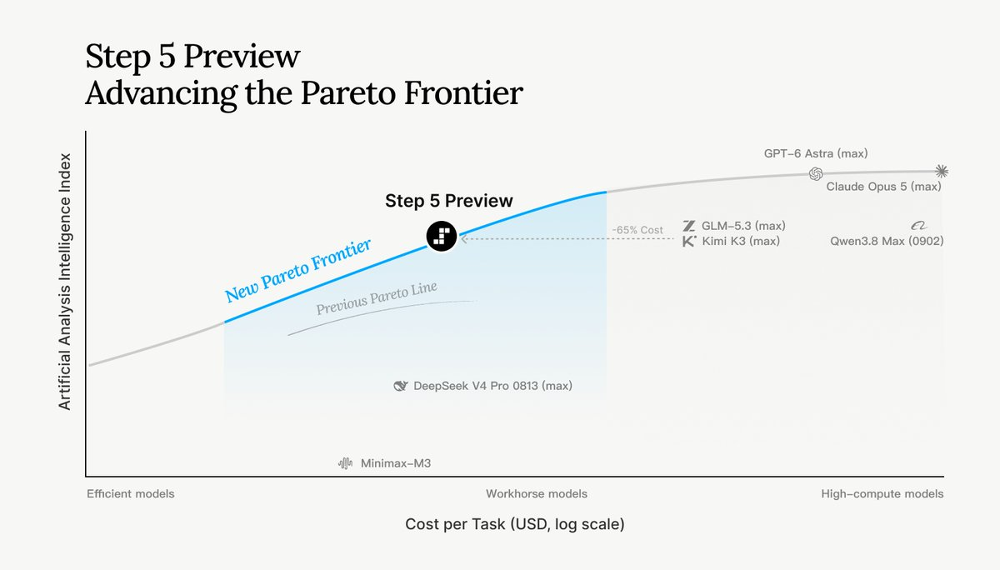
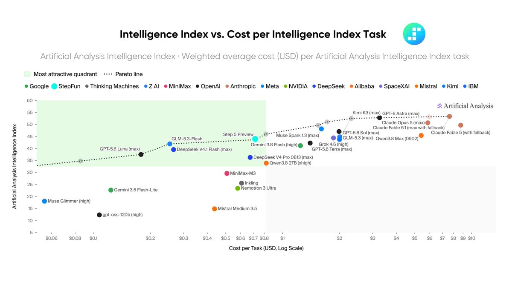
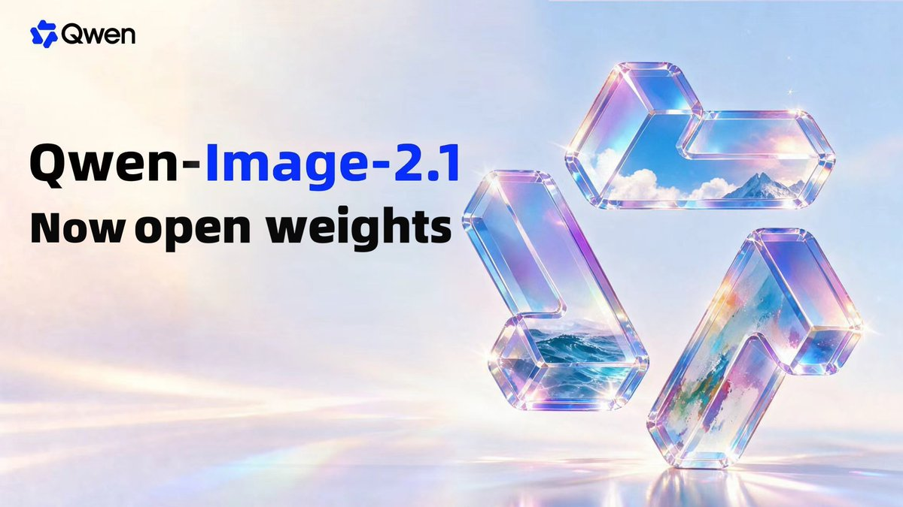
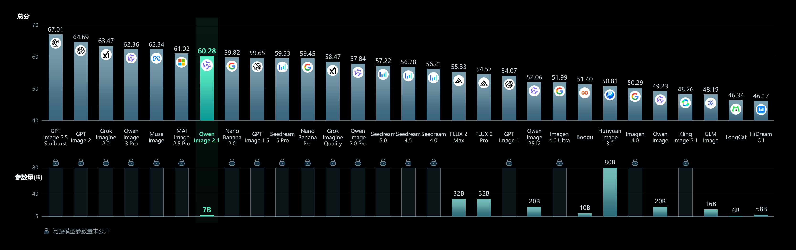
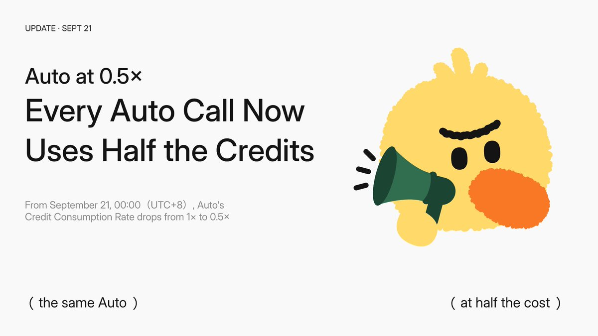

AI Intelligence Daily · 2026-09-21
ax v0.3.0 重构为通用 agentic 编排层（Task/Workspace/Gateway/Model）；Qwen-Image-2.1 开源权重双热；MiniMax Code 首发 v0.5.0；Qoder Credits 参考系数校准（Auto↓ / Ultimate↑）。ZCode 开源/审计、Cursor、Muse connectors 仍无突破。
专栏一｜新闻
1. 阶跃星辰 Step 5 Preview：agentic 旗舰预览，10/15 开源权重
事实
官方 X 宣布 Step 5 Preview：600B/27B MoE、1M 上下文+Vision、面向软件工程与专业知识工作；模型 ID step-5-preview；承诺 Oct 15 开源权重；开放平台可试用。AA Index 44、约 $1/$2.70 per 1M（第三方）。互动约 1681 likes / ~351k impressions。
判断
国内 P0 旗舰明确打向 agentic/SWE，对 Work 引擎选型有即时对照；开源日是硬观察点。


2. Google AX v0.3.0：通用 agentic 编排层重构
事实
google/ax 发布 v0.3.0：控制面拆为 ax-server / Redis Streams / ax-controller / ax-task-runner；原语 Task、Workspace（Git+MCP+skills）、Gateway（出站 allowlist）、Model。官网 agentexecutor.io。相对 May 2026 GCP 首发为架构级 UPDATE；README 仍警告破坏性变更。HN 晚间约 97 points。
判断
Cloud Agent 控制面声明式化的公开参考实现——与用户 Runtime/Sandbox/多租户主线同构。
3. Qwen-Image-2.1：统一生成+编辑开源权重
事实
官方 X 宣布 open weights：约 7B 视觉组件、原生 RGBA、最多 10 参考图；HF/GH/ModelScope 可核验；同晚 ComfyUI 与 vLLM day-0。X ~939k impressions；HN ~471 points。
判断
多模态工具链供给信号强，对 Agent Runtime 主线即时撞击弱于 Desktop/编排层，故取 A。


官方 X · Hugging Face · GitHub
4. MiniMax Code：首个 GH Release v0.5.0 + npm 0.5.0
事实
仓库首个正式 tag v0.5.0（tar.gz+sha256）；npm @minimax-ai/code@0.5.0；#244 ACP Skills 进 slash 菜单；★约 1224→1513。官方 X 本窗无根帖，以 GH/npm 为准。
判断
开源 Coding Agent 的发布工程成熟度跃迁；ACP Skills 宿主面值得对照。

5. Qoder：Credits 参考系数校准（Auto 0.5x / Ultimate 2x）
事实
官方文档：Auto 1.0→0.5、Ultimate 1.6→2；Kimi-K3 0.8→1.4 等；Flash 限免至 9/30 仍有效。FAQ：校准不直接改余额，实际按路由实耗。覆盖全系含 Cloud Agents。
判断
「默认更省 + 顶档更贵 + 限免拉新」组合拳；成本面板设计样本。

专栏二｜话题热议
1. Qwen-Image-2.1 开源双热
官方 X ~939k impressions；HN ~471 points / 150 comments。热度真实，叙事中心在图像栈而非 Agent Runtime。
2. Step 5 Preview 社区共振
官方 Introducing ~351k impressions；社区 thank-you 回复属噪音。核心是 agentic 旗舰与 10/15 开源承诺。
3. HN：ChatGPT × ad collector 隐私争议
~543 points / 302 comments。联网助手遥测同意面舆论，与 Desktop Agent consent 同构；非新洞。
专栏三｜开源雷达
1. MiniMax Code / google/ax（见新闻栏）
v0.5.0 首发；ax v0.3.0 架构重构。建议拆源码 / PoC。
2. BrowserSkill ★≈6040；cua ★≈25137
相对昨日快照短窗续涨；本窗无新正式产品 tag（BrowserSkill 仍 cli-v0.3.0）。
3. Trending 线索：security-audit-skill 等
cloudflare/security-audit-skill 等 agent security skill 上榜（HTML stars today）——供应链焦虑未退。
重点事件新进展
- MiniMax Code：首个 Release+npm → 是
- Qoder 定价：系数校准生效；Flash 限免仍在 → 是
- ZCode / Plugin4Shell / Muse connectors / Cursor：无实质 UPDATE → 否
- 小艺 0.7.0 / MiMo Desktop：版本钉死 → 否
今天正在形成的趋势
- Agent Runtime 控制面声明式化（AX 式 Task/Workspace/Gateway）。
- 国内旗舰叙事全面转向 agentic / SWE，开源日成可执行观察点。
- Coding Agent 成本面板：「默认更省、顶档更贵、限免拉新」。
- 开源 Coding Agent 的第二战场是发布工程（可 pin、可复现）。
- 能力生态信任议题持续（Plugin4Shell 后安全 Skill 热）。
对智能体互联网最值得吸收
- Workspace = Git + MCP + Skills 预挂载契约（AX）。
- Gateway 出站 allowlist 与沙箱、凭证同级配置。
对 Work / Agent 引擎最值得吸收
- 控制面三件套：API / reconciler / sandbox runner + 外部化状态。
- ACP Skills 进入 slash 菜单（MiniMax 0.5.0）。
- 参考系数与真实消耗拆开讲（Qoder FAQ）。
值得继续跟踪
- Step 5 · 10/15 开源 · API 回归
- google/ax v0.3.x · Substrate · 自有 PoC
- ZCode 开源/审计 · Plugin4Shell 补丁
- Qoder 系数 + Flash 限免至 09-30
- MiniMax Desktop · Muse connectors 文档 · Cursor 下一 changelog
价格 / 订阅雷达
- Qoder：Auto 0.5x / Ultimate 2x 自 09-21 00:00 SGT；Flash 0.0× 至 09-30。
- Step 5：AA 约 $1 / $2.70 per 1M（第三方）。